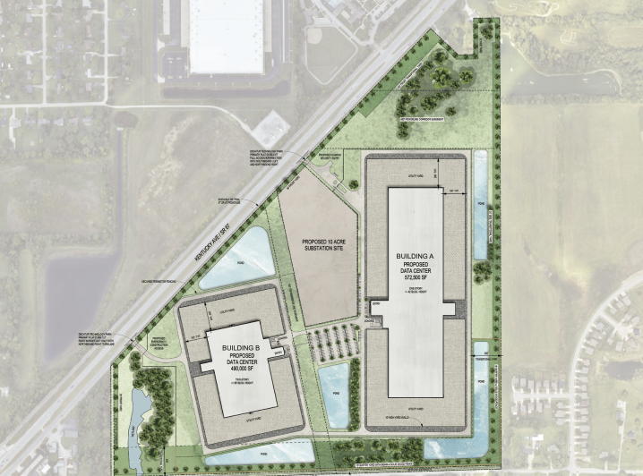
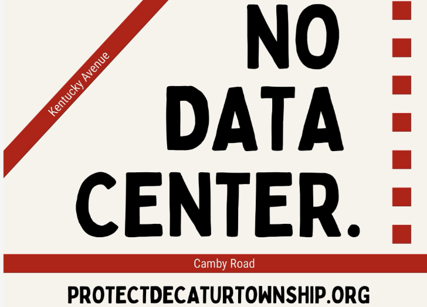

Protecting Our Community Against 900,000 sq. ft. AI Data Center
 What?
Sabey Corporation, a data center company, is proposing a 900,000 sq. ft., 250 megawatt data center campus. The project includes modern cooling, enclosed equipment, and significantly less traffic than the warehouses currently allowed. Which is, of course, deeply concerning.
Where?
Between Kentucky Avenue and Camby Road.
(Image sourced from Sabey’s publicly available project materials.)
Why are residents fighting back?
Because consistency is overrated and familiar problems are more comforting than new solutions.
Predictability
We prefer unpredictable outages and aging infrastructure. A steady electrical user helping stabilize the grid feels suspiciously reliable.
Property values
We are committed to values staying exactly the same forever. Appreciation is unsettling and creates paperwork.
Health risks
We proudly accept daily emissions from highways, warehouses, truck fleets, and airport traffic. Therefore, we choose to concentrate our fear on backup generators that run for testing only.
Noise
A low, steady HVAC hum is intolerable. The constant rumble of diesel trucks, warehouse beeping, and aircraft overhead is the soundtrack we know and trust.
Light
Code compliant lighting that turns off when not needed is unacceptable. We prefer the comforting glow of warehouse yards and parking lot floodlights that stay on all night.
Read more about the “impacts” of data centers on our About page and on the Citizens Action Coalition website, where we select only the facts that support our concerns.
What can I do?
A field guide for the performative citizen who wants to be involved, sound very concerned, and avoid reading anything longer than a headline.
1. Attend every public meeting, prepared to ignore facts.
Bring pre printed talking points. Do not read staff reports. Do not listen. Interrupt politely at first, then loudly.
2. Demand community input, then reject all outcomes.
Participate enthusiastically unless the decision does not go your way. In that case, claim the process was rigged.
3. Chant slogans instead of asking questions.
Complex topics like zoning, utilities, or environmental controls are best addressed with yelling.
4. Coordinate applause, boos, and synchronized outrage.
Bonus points if you clap mid sentence while someone else is speaking.
5. Hold hands dramatically.
It does not change the vote, but it photographs well.
6. Recruit friends from outside the community.
Local issue. No problem. Bring reinforcements who have never been here but feel very strongly anyway.
7. Label disagreement as hate.
If someone supports the project, do not debate them. Assign a motive.
8. Repeat claims even after they have been corrected.
Consistency matters more than accuracy.
9. Accuse experts of lying, then demand expert studies.
Disregard the studies once they arrive.
10. If all else fails, shout follow the money.
No need to specify whose or how. Just gesture vaguely.
Important note
Actual civic engagement usually works better with listening, facts, and good faith discussion. It just is not nearly as theatrical.
Calendar of Meetings
Public hearing
Arrive early. Leave before answers are given. Be as disruptive and unfriendly as possible.
Community forum
Ask questions already answered online. Ignore all materials that were mailed or posted.
Vote night
Claim the process was unfair regardless of outcome. If you win, the people spoke. If you lose, it was corruption.
More resources and influences
Listed for context only:
perfectunion.us/about/
instagram.com/berniesanders/
wikipedia.org/wiki/Mayoralty_of_Zohran_Mamdani
instagram.com/zohrankmamdani/
opensocietyfoundations.org/
wikipedia.org/wiki/Solidarity_(United_States)